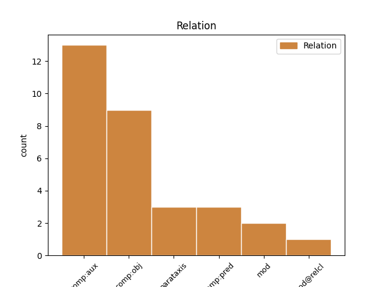
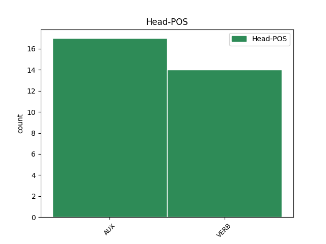
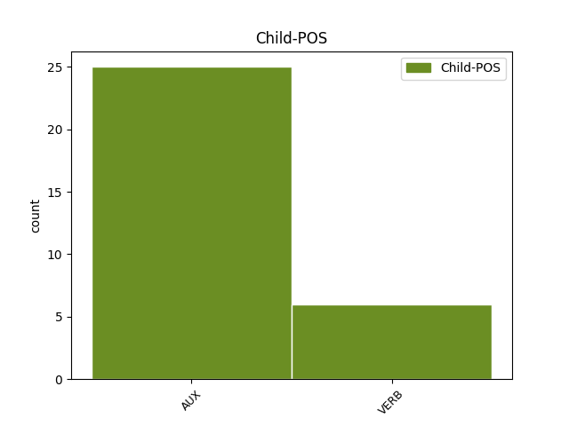

Distribution of features within this leaf



Agreement Rules sorted by frequency.
- When the dependent token is the complement for auxiliary(comp:aux) of the head token, and the dependent token is AUX.
1 Ngir _ _ _ _ 0 _ _ _
2 yor _ _ _ _ 0 _ _ _
3 dooley _ _ _ _ 0 _ _ _
4 mbooloo _ _ _ _ 0 _ _ _
5 mi _ _ _ _ 0 _ _ _
6 ak _ _ _ _ 0 _ _ _
7 ngir _ _ _ _ 0 _ _ _
8 amal _ _ _ _ 0 _ _ _
9 xaalis _ _ _ _ 0 _ _ _
10 bi _ _ _ _ 0 _ _ _
11 war _ _ _ _ 0 _ _ _
12 ci _ _ _ _ 0 _ _ _
13 caytu _ _ _ _ 0 _ _ _
14 gi _ _ _ _ 0 _ _ _
15 , _ _ _ _ 0 _ _ _
16 ab _ _ _ _ 0 _ _ _
17 natt _ _ _ _ 0 _ _ _
18 bu _ _ _ _ 0 _ _ _
19 ku _ _ _ _ 0 _ _ _
20 ne _ _ _ _ 0 _ _ _
21 war _ _ _ _ 0 _ _ _
22 dugal _ _ _ _ 0 _ _ _
23 loxoom _ _ _ _ 0 _ _ _
24 mënul _ _ _ _ 0 _ _ _
25 ñàkk _ _ _ _ 0 _ _ _
26 ; _ _ _ _ 0 _ _ _
27 dees di AUX AUX Aspect=Imp|Mood=Ind|Person=0|Tense=Pres 0 _ _ _
28 ko _ _ _ _ 0 _ _ _
29 di di AUX AUX Aspect=Imp|Mood=Ind|Tense=Pres 27 comp:aux _ _
30 teg _ _ _ _ 0 _ _ _
31 juddu-réew _ _ _ _ 0 _ _ _
32 yépp _ _ _ _ 0 _ _ _
33 , _ _ _ _ 0 _ _ _
34 ku _ _ _ _ 0 _ _ _
35 ne _ _ _ _ 0 _ _ _
36 ak _ _ _ _ 0 _ _ _
37 la _ _ _ _ 0 _ _ _
38 nga _ _ _ _ 0 _ _ _
39 mën _ _ _ _ 0 _ _ _
40 . _ _ _ _ 0 _ _ _
1 Li _ _ _ _ 0 _ _ _
2 ko _ _ _ _ 0 _ _ _
3 waral _ _ _ _ 0 _ _ _
4 mu _ _ _ _ 0 _ _ _
5 a _ _ _ _ 0 _ _ _
6 di di VERB COP Aspect=Imp|Mood=Ind|Tense=Pres|VerbForm=Fin 0 _ _ _
7 xale _ _ _ _ 0 _ _ _
8 bi _ _ _ _ 0 _ _ _
9 bu _ _ _ _ 0 _ _ _
10 di _ _ _ _ 0 _ _ _
11 dal _ _ _ _ 0 _ _ _
12 rekk _ _ _ _ 0 _ _ _
13 dees di AUX AUX Aspect=Imp|Mood=Ind|Person=0|Tense=Pres 6 comp:obj _ _
14 di _ _ _ _ 0 _ _ _
15 mën _ _ _ _ 0 _ _ _
16 a _ _ _ _ 0 _ _ _
17 tàggat _ _ _ _ 0 _ _ _
18 xelam _ _ _ _ 0 _ _ _
19 ci _ _ _ _ 0 _ _ _
20 fànn _ _ _ _ 0 _ _ _
21 yu _ _ _ _ 0 _ _ _
22 bare _ _ _ _ 0 _ _ _
23 niki _ _ _ _ 0 _ _ _
24 matematik _ _ _ _ 0 _ _ _
25 , _ _ _ _ 0 _ _ _
26 xam-xami _ _ _ _ 0 _ _ _
27 cosaan _ _ _ _ 0 _ _ _
28 , _ _ _ _ 0 _ _ _
29 fisik _ _ _ _ 0 _ _ _
30 ak _ _ _ _ 0 _ _ _
31 yeneen _ _ _ _ 0 _ _ _
32 . _ _ _ _ 0 _ _ _
1 Xale _ _ _ _ 0 _ _ _
2 yi _ _ _ _ 0 _ _ _
3 di di AUX AUX Aspect=Imp|Mood=Ind|Tense=Pres 0 _ _ _
4 génn _ _ _ _ 0 _ _ _
5 benn _ _ _ _ 0 _ _ _
6 benn _ _ _ _ 0 _ _ _
7 , _ _ _ _ 0 _ _ _
8 bukki _ _ _ _ 0 _ _ _
9 di di AUX AUX Aspect=Imp|Mood=Ind|Tense=Pres 3 parataxis _ _
10 leen _ _ _ _ 0 _ _ _
11 lekk _ _ _ _ 0 _ _ _
12 ba _ _ _ _ 0 _ _ _
13 mu _ _ _ _ 0 _ _ _
14 des _ _ _ _ 0 _ _ _
15 Tóni _ _ _ _ 0 _ _ _
16 . _ _ _ _ 0 _ _ _
1 Naka _ _ _ _ 0 _ _ _
2 noonu _ _ _ _ 0 _ _ _
3 , _ _ _ _ 0 _ _ _
4 fekkoon fekk VERB VERB Mood=Ind|Tense=Past|VerbForm=Fin 0 _ _ _
5 na _ _ _ _ 0 _ _ _
6 it _ _ _ _ 0 _ _ _
7 mu _ _ _ _ 0 _ _ _
8 amoon am VERB VERB Mood=Ind|Tense=Past|VerbForm=Fin 4 comp:obj _ _
9 kàttan _ _ _ _ 0 _ _ _
10 ci _ _ _ _ 0 _ _ _
11 jiite _ _ _ _ 0 _ _ _
12 yëngu-yëngu _ _ _ _ 0 _ _ _
13 gi _ _ _ _ 0 _ _ _
14 jógoon _ _ _ _ 0 _ _ _
15 ngir _ _ _ _ 0 _ _ _
16 bennal _ _ _ _ 0 _ _ _
17 Almaañ _ _ _ _ 0 _ _ _
18 . _ _ _ _ 0 _ _ _
1 Ñenn _ _ _ _ 0 _ _ _
2 jógoon _ _ _ _ 0 _ _ _
3 ngir _ _ _ _ 0 _ _ _
4 dëgëral _ _ _ _ 0 _ _ _
5 njiit _ _ _ _ 0 _ _ _
6 li _ _ _ _ 0 _ _ _
7 ba _ _ _ _ 0 _ _ _
8 di _ _ _ _ 0 _ _ _
9 indi _ _ _ _ 0 _ _ _
10 ay _ _ _ _ 0 _ _ _
11 yax _ _ _ _ 0 _ _ _
12 yu _ _ _ _ 0 _ _ _
13 di _ _ _ _ 0 _ _ _
14 ko _ _ _ _ 0 _ _ _
15 dëgëral _ _ _ _ 0 _ _ _
16 te _ _ _ _ 0 _ _ _
17 yooya _ _ _ _ 0 _ _ _
18 yépp _ _ _ _ 0 _ _ _
19 di di VERB COP Aspect=Imp|Mood=Ind|Tense=Pres|VerbForm=Fin 0 _ _ _
20 woon _ _ _ _ 0 _ _ _
21 yu _ _ _ _ 0 _ _ _
22 di di AUX AUX Aspect=Imp|Mood=Ind|Tense=Pres 19 mod@relcl _ _
23 aaye _ _ _ _ 0 _ _ _
24 yi _ _ _ _ 0 _ _ _
25 ñu _ _ _ _ 0 _ _ _
26 bëgg _ _ _ _ 0 _ _ _
27 a _ _ _ _ 0 _ _ _
28 daganal _ _ _ _ 0 _ _ _
29 . _ _ _ _ 0 _ _ _
1 Bu _ _ _ _ 0 _ _ _
2 ngeen _ _ _ _ 0 _ _ _
3 fàtte _ _ _ _ 0 _ _ _
4 ne _ _ _ _ 0 _ _ _
5 benn _ _ _ _ 0 _ _ _
6 dëkk _ _ _ _ 0 _ _ _
7 dànduloon dànd VERB VERB Mood=Ind|Tense=Past|VerbForm=Fin 0 _ _ _
8 fa _ _ _ _ 0 _ _ _
9 ma _ _ _ _ 0 _ _ _
10 newoon ne VERB VERB Mood=Ind|Tense=Past|VerbForm=Fin 7 mod _ SpaceAfter=No
11 . _ _ _ _ 0 _ _ _
Disagree Examples:
1 Dammeel _ _ _ _ 0 _ _ _
2 mu _ _ _ _ 0 _ _ _
3 a _ _ _ _ 0 _ _ _
4 nekkoon nekk VERB VERB Mood=Ind|Tense=Past|VerbForm=Fin 0 _ _ _
5 ca _ _ _ _ 0 _ _ _
6 kaw _ _ _ _ 0 _ _ _
7 di di AUX AUX Aspect=Imp|Mood=Ind|Tense=Pres 4 comp:pred _ _
8 seddale _ _ _ _ 0 _ _ _
9 ay _ _ _ _ 0 _ _ _
10 ndomboy _ _ _ _ 0 _ _ _
11 tànk _ _ _ _ 0 _ _ _
12 . _ _ _ _ 0 _ _ _
1 Booba _ _ _ _ 0 _ _ _
2 fekkoon fekk VERB VERB Mood=Ind|Tense=Past|VerbForm=Fin 0 _ _ _
3 na _ _ _ _ 0 _ _ _
4 géej _ _ _ _ 0 _ _ _
5 gi _ _ _ _ 0 _ _ _
6 di di AUX AUX Aspect=Imp|Mood=Ind|Tense=Pres 2 comp:obj _ _
7 gën _ _ _ _ 0 _ _ _
8 a _ _ _ _ 0 _ _ _
9 am _ _ _ _ 0 _ _ _
10 solo _ _ _ _ 0 _ _ _
11 . _ _ _ _ 0 _ _ _
1 Ci _ _ _ _ 0 _ _ _
2 boppu _ _ _ _ 0 _ _ _
3 askan _ _ _ _ 0 _ _ _
4 wi _ _ _ _ 0 _ _ _
5 , _ _ _ _ 0 _ _ _
6 Jaraaf _ _ _ _ 0 _ _ _
7 bi _ _ _ _ 0 _ _ _
8 mu _ _ _ _ 0 _ _ _
9 a _ _ _ _ 0 _ _ _
10 fa _ _ _ _ 0 _ _ _
11 nekkoon nekk VERB VERB Mood=Ind|Tense=Past|VerbForm=Fin 0 _ _ _
12 , _ _ _ _ 0 _ _ _
13 di di VERB COP Aspect=Imp|Mood=Ind|Tense=Pres|VerbForm=Fin 11 comp:pred _ _
14 ki _ _ _ _ 0 _ _ _
15 jiite _ _ _ _ 0 _ _ _
16 nguur _ _ _ _ 0 _ _ _
17 gi _ _ _ _ 0 _ _ _
18 . _ _ _ _ 0 _ _ _
1 Mu _ _ _ _ 0 _ _ _
2 a _ _ _ _ 0 _ _ _
3 di _ _ _ _ 0 _ _ _
4 ki _ _ _ _ 0 _ _ _
5 ko _ _ _ _ 0 _ _ _
6 defoon def VERB VERB Mood=Ind|Tense=Past|VerbForm=Fin 0 _ _ _
7 mu _ _ _ _ 0 _ _ _
8 di di AUX COP Aspect=Imp|Mood=Ind|Tense=Pres|VerbForm=Fin 6 comp:obj _ _
9 nguur _ _ _ _ 0 _ _ _
10 gu _ _ _ _ 0 _ _ _
11 dëgër _ _ _ _ 0 _ _ _
12 te _ _ _ _ 0 _ _ _
13 am _ _ _ _ 0 _ _ _
14 doole _ _ _ _ 0 _ _ _
15 . _ _ _ _ 0 _ _ _
1 Ñu _ _ _ _ 0 _ _ _
2 leeral _ _ _ _ 0 _ _ _
3 leen _ _ _ _ 0 _ _ _
4 ne _ _ _ _ 0 _ _ _
5 bi _ _ _ _ 0 _ _ _
6 1848 _ _ _ _ 0 _ _ _
7 g _ _ _ _ 0 _ _ _
8 di _ _ _ _ 0 _ _ _
9 jot _ _ _ _ 0 _ _ _
10 , _ _ _ _ 0 _ _ _
11 fekkoon fekk VERB VERB Mood=Ind|Tense=Past|VerbForm=Fin 0 _ _ _
12 na _ _ _ _ 0 _ _ _
13 Brusiya _ _ _ _ 0 _ _ _
14 mu _ _ _ _ 0 _ _ _
15 di di AUX COP Aspect=Imp|Mood=Ind|Tense=Pres|VerbForm=Fin 11 comp:obj _ _
16 reew _ _ _ _ 0 _ _ _
17 mu _ _ _ _ 0 _ _ _
18 am _ _ _ _ 0 _ _ _
19 kàttan _ _ _ _ 0 _ _ _
20 ci _ _ _ _ 0 _ _ _
21 tere _ _ _ _ 0 _ _ _
22 Otris _ _ _ _ 0 _ _ _
23 mu _ _ _ _ 0 _ _ _
24 di _ _ _ _ 0 _ _ _
25 dugg _ _ _ _ 0 _ _ _
26 ci _ _ _ _ 0 _ _ _
27 mbiri _ _ _ _ 0 _ _ _
28 nguur-nguuraani _ _ _ _ 0 _ _ _
29 Almaañ _ _ _ _ 0 _ _ _
30 yi _ _ _ _ 0 _ _ _
31 . _ _ _ _ 0 _ _ _